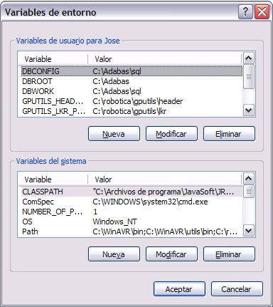
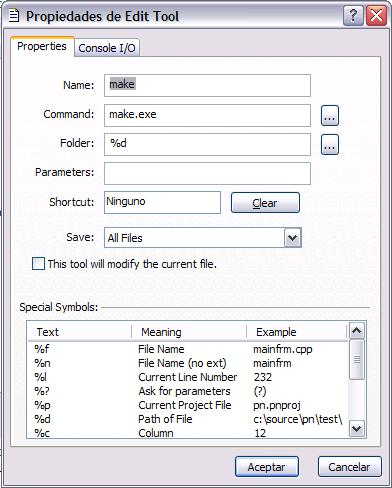
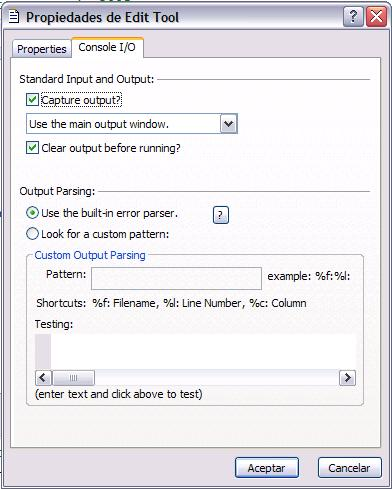

|
Taller de Robótica Básico - Skybot v1.3. - SESION 3 - Configuración del Programmers Notepad |
En este capitulo configuraremos windows y el Programmers Notepad para su funcionamiento.
Para una utilización más sencilla del Programmers Notepad, vamos a realizar algunos cambios en el PATH de Windows. El proceso es válido para los sistemas operativos Windows 2000 en todas las versiones y Windows XP, igualmente.
Primero nos descargaremos el siguiente archivo llamado Utils.zip y lo descomprimiremos en la carpeta C:\robotica
Despues iremos por la siguiente ruta: Inicio-> Configuración ->Panel de Control->Sistema. Una vez en la ventana pulsamos en la pestaña Opciones Avanzadas(o Avanzado en Windows 2000). Seguidamente pulsamos en Variables del Entorno. Aparecerá la siguiente ventana:

En la parte de abajo de la ventana vemos que pone Varibles del sistema, ahí buscaremos una entrada que se llama “Path”. La pinchamos una vez con el ratón, y pulsamos el botón que pone “Modificar”. Ahora, es importante que no borremos nada en el path, lo que vamos a hacer es añadir unas palabras, a continuación de lo que hay escrito, para ello ponemos literalmente: “ ;C:\robotica\utils\bin ” (Sin las comillas obviamente).
AVISO: Tened cuidado porque al principio esta todo el texto del path seleccionado y si escribis algo se borrará todo lo que pone, para evitarlo pulsar una vez la tecla de flecha hacia la derecha (->).
Una vez hecho esto pulsamos a todo en “Aceptar”. Este paso no lo tendremos que repetir nunca más, exceptuando que esté mal hecho.
Ejecutamos el Programmers Notepad.
Entramos en el menu “Tools”. Y pinchamos en “Add Tools”. Pinchamos en un deplegable que tenemos arriba bajo el nombre de “Scheme”. En ese desplegable elegimos la opción “C/C++”.
Despues pulsamos en el botón “Add” de la derecha. Se abre una ventana que se llama “Propiedades de New Tool”.
En esta ventana rellenaremos los campos de esta manera:
Name: Make
Command: make.exe
Folder: %d
Parameters: (Lo dejamos en blanco)
Save: Elegiremos “all files” , para que lo guarde todo antes de compilar.
|
 |
Después pincharemos en la pestaña que hay arriba, que se llama “Console I/O”. Ahí configuraremos:
Capture Output: Esta opción debe estar activada.
Clear output before running: Esta opción debe se estar activada.
Use the built-in error parse: Esta es la opción que debe estar elegida.

Pulsamos “aceptar”, y en la ventana de Option pulsamos “Ok”. Y ya tenemos configurado nuestro programa para editar y compilar cualquier programa en C. Debemos de recordar que esto se guardará para cualquier programa que abramos que sea en lenguaje C/C++